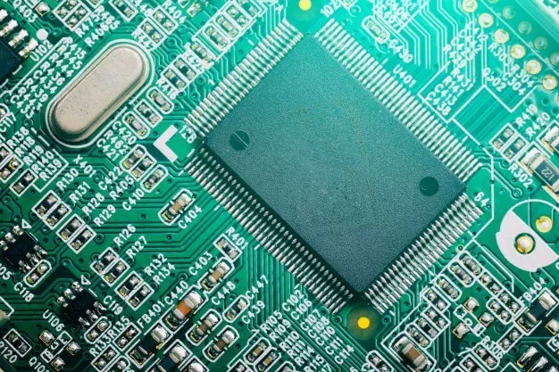

| Memoria RAM / CMOS | ||
|
|
 | |
| ¿Qué es la Memoria RAM? | ¿Qué es la memoria RAM CMOS? |
|---|---|
La Memoria de Acceso Aleatorio (RAM) es un componente esencial en una computadora que se utiliza para almacenar temporalmente datos y programas en uso. Es un tipo de memoria volátil que permite a la CPU acceder rápidamente a la información que necesita para ejecutar aplicaciones y tareas. |
La memoria RAM CMOS es una pequeña área de memoria volátil que se encuentra en la placa base (mainboard) de una computadora. No debe confundirse con la memoria RAM principal, que es donde se almacenan los datos y programas en ejecución. La memoria RAM CMOS se utiliza para almacenar configuraciones críticas y datos de bajo nivel, como la fecha y la hora del sistema, la configuración del hardware, las contraseñas de la BIOS y otros parámetros del sistema. |
| Funciones de la Memoria RAM | Función de la Memoria RAM CMOS |
La RAM desempeña un papel crucial en el rendimiento de una computadora, ya que almacena datos y programas
que se utilizan activamente. Algunas de sus funciones principales son:
|
La memoria RAM CMOS se utiliza para retener información importante que debe mantenerse incluso cuando la computadora está apagada.
Algunas de sus funciones principales son:
|
| Tipo de Memoria RAM | Problemas comunes de la memoria CMOS |
| Existen varios tipos de memoria RAM, incluyendo DDR, DDR2, DDR3, DDR4, y DDR5, cada uno con diferentes velocidades y capacidades. La elección de la memoria RAM adecuada depende de las necesidades específicas de tu computadora y tu presupuesto. | Los problemas comunes relacionados con la memoria RAM CMOS incluyen la pérdida de configuraciones, errores de fecha y hora incorrectos, o la incapacidad de acceder a la computadora debido a una contraseña de BIOS olvidada. Estos problemas a menudo se pueden resolver ingresando a la BIOS y realizando ajustes adecuados. |